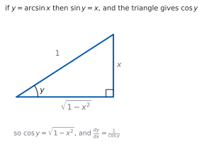
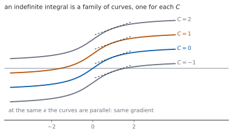

HL 5.15 — Further derivatives and their integrals（さらに進んだ導関数と、その不定積分）
- \(\tan x\)、\(\sec x\)、\(\operatorname{cosec} x\)、\(\cot x\) の導関数を使える。
- \(a^{x}\)、\(\log_{a}x\) の導関数を使える。
- \(\arcsin x\)、\(\arccos x\)、\(\arctan x\) の導関数を使える。
- それらを逆に読んで、不定積分に使える。
- \(ax+b\) との合成の形を積分できる。
- 部分分数に直してから積分できる（HL 1.11）。
The idea
1. The new standard derivatives（新しい標準的な導関数）
シラバスは、こう書いています。
Derivatives of tanx, secx, cosecx, cotx, ax, loga x, arcsinx, arccosx, arctanx.
公式集の 5.15 の欄に、まとめて印刷されています。
Standard derivatives
| \(f(x)\) | \(f'(x)\) |
|---|---|
| \(\tan x\) | \(\sec^{2}x\) |
| \(\sec x\) | \(\sec x\tan x\) |
| \(\operatorname{cosec} x\) | \(-\operatorname{cosec} x\cot x\) |
| \(\cot x\) | \(-\operatorname{cosec}^{2}x\) |
| \(a^{x}\) | \(a^{x}(\ln a)\) |
| \(\log_{a}x\) | \(\dfrac{1}{x\ln a}\) |
| \(\arcsin x\) | \(\dfrac{1}{\sqrt{1-x^{2}}}\) |
| \(\arccos x\) | \(-\dfrac{1}{\sqrt{1-x^{2}}}\) |
| \(\arctan x\) | \(\dfrac{1}{1+x^{2}}\) |
覚えるのではなく、引けるようにしておきます。 頭に co が付く \(3\) つ（\(\cos\)、\(\operatorname{cosec}\)、\(\cot\)、それに \(\arccos\)）は、導関数にマイナスが付きます。
2. Where the \(\tan\) family comes from（\(\tan\) の仲間はどこから出るか）
\(\tan x = \dfrac{\sin x}{\cos x}\) に商の微分公式を使います（SL 5.6）。
\[ \frac{\mathrm{d}}{\mathrm{d}x}\tan x = \frac{\cos x\cos x-\sin x(-\sin x)}{\cos^{2}x} = \frac{1}{\cos^{2}x} = \sec^{2}x \tag{1}\]
\(\sec x = (\cos x)^{-1}\) も、連鎖律で出ます。どれも新しい原理ではありません（第 1 節）。
3. \(a^{x}\) and \(\log_{a}x\)（底が \(e\) でないとき）
\(a^{x}\) は \(e\) の形に直します。\(a = e^{\ln a}\) なので
\[ a^{x} = e^{x\ln a}, \qquad \frac{\mathrm{d}}{\mathrm{d}x}a^{x} = a^{x}\ln a \tag{2}\]
\(\log_{a}x\) は底の変換で \(\dfrac{\ln x}{\ln a}\) です（SL 1.7b）。\(\ln a\) は定数なので
\[ \frac{\mathrm{d}}{\mathrm{d}x}\log_{a}x = \frac{1}{x\ln a} \tag{3}\]
\(a = e\) のとき \(\ln a = 1\) になり、SL で習った形にもどります。
4. The inverse trigonometric derivatives（逆三角関数の導関数）
\(y = \arcsin x\) は \(\sin y = x\) という意味です（HL 3.9）。両辺を \(x\) で微分します（HL 5.14）。
\[ \cos y\,\frac{\mathrm{d}y}{\mathrm{d}x} = 1, \qquad \frac{\mathrm{d}y}{\mathrm{d}x} = \frac{1}{\cos y} \]

三角形から \(\cos y = \sqrt{1-x^{2}}\) なので、表 1 の形になります。
\(\arccos\) は符号が逆、\(\arctan\) は \(\sqrt{\ }\) が付きません。\(\arctan\) の導関数は、どの \(x\) でも定義されます。
5. Reading them backwards（逆に読む：不定積分）
Indefinite integrals of the derivatives of any of the above functions.
Indefinite integral interpreted as a family of curves.
表 1 を右から左に読めば、そのまま不定積分です。公式集の 5.15 には、次の \(3\) つも印刷されています。
Standard integrals
\[ \int a^{x}\,\mathrm{d}x = \frac{1}{\ln a}a^{x}+C \tag{4}\]
\[ \int \frac{1}{a^{2}+x^{2}}\,\mathrm{d}x = \frac{1}{a}\arctan\left(\frac{x}{a}\right)+C \tag{5}\]
\[ \int \frac{1}{\sqrt{a^{2}-x^{2}}}\,\mathrm{d}x = \arcsin\left(\frac{x}{a}\right)+C, \qquad \lvert x \rvert < a \tag{6}\]

\(+C\) を忘れないこと。 \(C\) がちがう曲線は上下にずれているだけで、どこでも傾きが同じです。
6. Composites with \(ax+b\)（\(ax+b\) との合成）
The composites of any of these with a linear function.
\(ax+b\) との合成なら、\(\dfrac{1}{a}\) をかけるだけです（SL 5.10）。シラバスが挙げている例です。
\(\int \sec^{2}(2x+5)\mathrm{d}x = \frac{1}{2}\tan(2x+5)+C\)
\[ \int \frac{1}{x^{2}+2x+5}\,\mathrm{d}x = \frac{1}{2}\arctan\left(\frac{x+1}{2}\right)+C \]
こちらは平方完成が先です。\(x^{2}+2x+5 = (x+1)^{2}+4\) と直してから 式 5 を使います。
7. Partial fractions in the integrand（部分分数にしてから積分）
Use of partial fractions to rearrange the integrand.
Link to: partial fractions (AHL1.11)
分母が \(1\) 次式の積に因数分解できるときは、部分分数に直します（HL 1.11）。シラバスの例です。
\(\int \frac{1}{x^{2}+3x+2}\mathrm{d}x = \ln\left| \frac{x+1}{x+2} \right|+C\)
分母が因数分解できるかどうかが、分かれ道です。できれば部分分数、できなければ平方完成して \(\arctan\) です。
TI-Nspire CX II は、不定積分もそのまま返します。積分のテンプレートは menu → 4: Calculus → 3: Integral です。
電卓は \(+C\) を付けません。 自分で書き足してください。
\(\arctan\) や \(\arcsin\) の形は、電卓の答えが公式集と見た目でちがうことがあります。微分して元にもどるかを見れば、どちらも正しいと分かります。
答案には、式を書いてください。 平方完成や部分分数の行を見せてから、公式集の形に当てはめます。
Paper 1 では使えません。 このページの例題と演習は、すべて手で解けるようにしてあります。
Why it works
なぜ \(\tan\) の導関数が \(\sec^{2}\) なのか
商の微分公式に入れると、分子が \(\cos^{2}x+\sin^{2}x = 1\) になります（式 1）。
\[ \frac{\mathrm{d}}{\mathrm{d}x}\tan x = \frac{1}{\cos^{2}x} = \sec^{2}x \]
Pythagoras の恒等式が効いています（HL 3.9）。
\(\sec x = (\cos x)^{-1}\) なら連鎖律で
\[ \frac{\mathrm{d}}{\mathrm{d}x}\sec x = -(\cos x)^{-2}(-\sin x) = \frac{\sin x}{\cos^{2}x} = \sec x\tan x \]
です。\(\operatorname{cosec}\) と \(\cot\) も同じ計算で、符号だけが逆になります。
なぜ \(a^{x}\) の導関数に \(\ln a\) が出るのか
\(a^{x} = e^{x\ln a}\) と書きなおします。指数の部分は \(x\) の \(1\) 次式で、その導関数が \(\ln a\) です。
連鎖律から
\[ \frac{\mathrm{d}}{\mathrm{d}x}e^{x\ln a} = e^{x\ln a}\times\ln a = a^{x}\ln a \]
です。\(\ln a\) は「\(a\) を \(e\) の何乗で書くか」を表す数で、それがそのまま出てきます。
\(a = e\) なら \(\ln e = 1\) で、\(e^{x}\) の導関数が \(e^{x}\) という見慣れた形になります。
なぜ \(\arcsin\) の導関数に \(\sqrt{1-x^{2}}\) が出るのか
\(\sin y = x\) を微分すると \(\cos y\dfrac{\mathrm{d}y}{\mathrm{d}x} = 1\) です。
\(\cos y\) を \(x\) で書きたいので、\(\sin^{2}y+\cos^{2}y = 1\) を使います。
\[ \cos y = \sqrt{1-\sin^{2}y} = \sqrt{1-x^{2}} \]
ここで正の平方根を取ってよいのは、\(\arcsin\) の値域が \(\left[-\dfrac{\pi}{2},\ \dfrac{\pi}{2}\right]\) で、そこでは \(\cos y \geq 0\) だからです（HL 3.9）。
\(\arccos\) の値域は \([0,\ \pi]\) で、\(\sin y \geq 0\) です。同じ計算で符号だけが逆になります。
なぜ \(\dfrac{1}{a^{2}+x^{2}}\) の積分に \(\dfrac{1}{a}\) が付くのか
\(\dfrac{1}{a^{2}+x^{2}} = \dfrac{1}{a^{2}}\cdot\dfrac{1}{1+\left(\frac{x}{a}\right)^{2}}\) と書きなおします。
\(\arctan\left(\dfrac{x}{a}\right)\) を微分すると、連鎖律で \(\dfrac{1}{a}\) が出ます。
\[ \frac{\mathrm{d}}{\mathrm{d}x}\arctan\left(\frac{x}{a}\right) = \frac{1}{1+\left(\frac{x}{a}\right)^{2}}\times\frac{1}{a} = \frac{a}{a^{2}+x^{2}} \]
ほしいのは \(\dfrac{1}{a^{2}+x^{2}}\) なので、\(\dfrac{1}{a}\) をかけます。\(\arcsin\) のほうに \(\dfrac{1}{a}\) が付かないのは、\(\sqrt{\ }\) の中も外も同じだけ \(a\) で割れるからです。
Worked examples
問題文は英語です。意味が理解できなかったら、問題文の下の「日本語訳」を開いてください。解説は日本語です。
例題も演習も、すべて電卓なしで解けます。 Paper 1 のつもりで解いてください。
例題 1 Differentiate each of the following.
(a) \(y = \tan 3x\)
(b) \(y = x\sec x\)
(c) \(y = \arctan 2x\)
日本語訳
次のそれぞれを微分しなさい。
(a) \(y = \tan 3x\)
(b) \(y = x\sec x\)
(c) \(y = \arctan 2x\)
(a) 連鎖律です。外は \(\tan\)、中は \(3x\) です。
\[ \frac{\mathrm{d}y}{\mathrm{d}x} = 3\sec^{2}3x \]
(b) 積の微分公式です（SL 5.6）。
\[ \frac{\mathrm{d}y}{\mathrm{d}x} = \sec x+x\sec x\tan x \]
(c) 外は \(\arctan\)、中は \(2x\) です。
\[ \frac{\mathrm{d}y}{\mathrm{d}x} = \frac{1}{1+(2x)^{2}}\times 2 = \frac{2}{1+4x^{2}} \]
検算（(a)）。 \(x = 0\) で \(3\sec^{2}0 = 3\) ✓ \(\tan 3x\) は原点で傾き \(3\) です。
検算（(c)）。 \(x = 0\) で \(2\) ✓ \(\arctan 2x\) も原点で傾き \(2\) です。
(a) \(\dfrac{\mathrm{d}y}{\mathrm{d}x} = 3\sec^{2}3x\)
(b) \(\dfrac{\mathrm{d}y}{\mathrm{d}x} = \sec x+x\sec x\tan x\)
(c) \(\dfrac{\mathrm{d}y}{\mathrm{d}x} = \dfrac{2}{1+4x^{2}}\)
例題 2 Differentiate \(y = 3^{x}\) and \(y = \log_{2}x\).
日本語訳
\(y = 3^{x}\) と \(y = \log_{2}x\) を微分しなさい。
\[ \frac{\mathrm{d}}{\mathrm{d}x}3^{x} = 3^{x}\ln 3, \qquad \frac{\mathrm{d}}{\mathrm{d}x}\log_{2}x = \frac{1}{x\ln 2} \]
検算（\(e\) にもどす）。 \(a = e\) なら \(\ln e = 1\) で、\(e^{x}\) と \(\dfrac{1}{x}\) ✓ 見慣れた形です。
検算（符号）。 \(\ln 3 > 0\)、\(\ln 2 > 0\) なので、どちらの導関数も正 ✓ グラフはどちらも増加です。
\[\frac{\mathrm{d}}{\mathrm{d}x}3^{x} = 3^{x}\ln 3\]
\[\frac{\mathrm{d}}{\mathrm{d}x}\log_{2}x = \frac{1}{x\ln 2}\]
例題 3 Find each of the following integrals.
(a) \(\displaystyle\int \sec^{2}(2x+5)\,\mathrm{d}x\)
(b) \(\displaystyle\int \frac{1}{x^{2}+2x+5}\,\mathrm{d}x\)
日本語訳
次のそれぞれの積分を求めなさい。
(a) \(\displaystyle\int \sec^{2}(2x+5)\,\mathrm{d}x\)
(b) \(\displaystyle\int \frac{1}{x^{2}+2x+5}\,\mathrm{d}x\)
(a) \(\sec^{2}\) の積分は \(\tan\) です。\(2x+5\) との合成なので \(\dfrac{1}{2}\) をかけます（第 6 節）。
\[ \int \sec^{2}(2x+5)\,\mathrm{d}x = \frac{1}{2}\tan(2x+5)+C \]
(b) まず平方完成です。
\[ x^{2}+2x+5 = (x+1)^{2}+4 \]
式 5 で \(a = 2\)、\(x\) の代わりに \(x+1\) です。
\[ \int \frac{1}{(x+1)^{2}+2^{2}}\,\mathrm{d}x = \frac{1}{2}\arctan\left(\frac{x+1}{2}\right)+C \]
検算（(a)）。 微分してもどします。 \(\dfrac{1}{2}\times 2\sec^{2}(2x+5) = \sec^{2}(2x+5)\) ✓
検算（(b)）。 微分すると \(\dfrac{1}{2}\cdot\dfrac{1}{1+\left(\frac{x+1}{2}\right)^{2}}\cdot\dfrac{1}{2} = \dfrac{1}{(x+1)^{2}+4}\) ✓
(a) \(\displaystyle\int \sec^{2}(2x+5)\,\mathrm{d}x = \frac{1}{2}\tan(2x+5)+C\)
(b) \(x^{2}+2x+5 = (x+1)^{2}+4\), so
\[\int \frac{1}{x^{2}+2x+5}\,\mathrm{d}x = \frac{1}{2}\arctan\left(\frac{x+1}{2}\right)+C\]
例題 4 Find \(\displaystyle\int \frac{1}{x^{2}+3x+2}\,\mathrm{d}x\).
日本語訳
\(\displaystyle\int \frac{1}{x^{2}+3x+2}\,\mathrm{d}x\) を求めなさい。
分母が因数分解できます。
\[ x^{2}+3x+2 = (x+1)(x+2) \]
部分分数に直します（HL 1.11）。
\[ \frac{1}{(x+1)(x+2)} = \frac{A}{x+1}+\frac{B}{x+2} \]
\(1 = A(x+2)+B(x+1)\) で、\(x = -1\) から \(A = 1\)、\(x = -2\) から \(B = -1\) です。
\[ \int\left(\frac{1}{x+1}-\frac{1}{x+2}\right)\mathrm{d}x = \ln\lvert x+1 \rvert-\ln\lvert x+2 \rvert+C = \ln\left\lvert \frac{x+1}{x+2} \right\rvert+C \]
検算。 足しもどします。 \(\dfrac{1}{x+1}-\dfrac{1}{x+2} = \dfrac{(x+2)-(x+1)}{(x+1)(x+2)} = \dfrac{1}{(x+1)(x+2)}\) ✓
検算（\(x = 0\) で）。 もとの式は \(\dfrac{1}{2}\)、部分分数は \(1-\dfrac{1}{2} = \dfrac{1}{2}\) ✓
\[\frac{1}{x^{2}+3x+2} = \frac{1}{x+1}-\frac{1}{x+2}\]
\[\int \frac{1}{x^{2}+3x+2}\,\mathrm{d}x = \ln\lvert x+1 \rvert-\ln\lvert x+2 \rvert+C = \ln\left\lvert \frac{x+1}{x+2} \right\rvert+C\]
試験ではこう書く
The denominator factorises as \(x^{2}+3x+2 = (x+1)(x+2)\), a product of two distinct linear factors, so the integrand can be written in partial fractions:
\[\frac{1}{(x+1)(x+2)} = \frac{A}{x+1}+\frac{B}{x+2}\]
Multiplying through by \((x+1)(x+2)\) gives \(1 = A(x+2)+B(x+1)\). Substituting \(x = -1\) gives \(1 = A\), and substituting \(x = -2\) gives \(1 = -B\), so \(B = -1\).
Hence
\[\int \frac{1}{x^{2}+3x+2}\,\mathrm{d}x = \int\left(\frac{1}{x+1}-\frac{1}{x+2}\right)\mathrm{d}x = \ln\lvert x+1 \rvert-\ln\lvert x+2 \rvert+C\]
The two logarithms may be combined using the laws of logarithms, giving \(\ln\left\lvert \dfrac{x+1}{x+2} \right\rvert+C\). The modulus signs are needed because the integrand is defined for \(x < -2\) and for \(-2 < x < -1\) as well as for \(x > -1\).
Note that completing the square would not help here: the quadratic has real roots, so the answer involves logarithms rather than \(\arctan\).
Common errors
co の付く関数の符号を落とす
\(\operatorname{cosec}\)、\(\cot\)、\(\arccos\) の導関数にはマイナスが付きます（表 1）。
符号を落とすと、あとの計算が全部ずれます。公式集を見て確かめてください。
それは \(x^{a}\) の微分です。指数に \(x\) があるときは 式 2 です。
\(\dfrac{\mathrm{d}}{\mathrm{d}x}2^{x} = 2^{x}\ln 2\) であって \(x2^{x-1}\) ではありません。
\(\ln\) になるのは \(\dfrac{f'}{f}\) の形のときだけです。分子が \(2x\) なら \(\ln\)、分子が \(1\) なら \(\arctan\) です。
分子を見てから決めてください（式 5）。
\(x^{2}+2x+5\) はそのままでは \(a^{2}+x^{2}\) の形ではありません（第 6 節）。
\((x+1)^{2}+4\) に直してから使います。\(1\) 次の項があれば、まず平方完成です。
分母が実数の範囲で因数分解できるなら、答えは \(\ln\) です（第 7 節）。
判別式を見ると早いです。\(b^{2}-4ac > 0\) なら部分分数、\(< 0\) なら平方完成して \(\arctan\) です。
不定積分の答えは曲線の族です（図 2）。
\(+C\) がないと、答えが \(1\) 本の曲線に限られてしまいます。毎回書いてください。
Exercises
各問題に、折りたたみが \(3\) つ付いています。日本語訳、解答例（答案用紙に書くべきこと。英語です）、解説（なぜそうなるか。日本語です）。
まず自分で解いて、次に解答例と見くらべてください。解説は、合わなかったときだけ開けば十分です。
1 Differentiate \(y = \tan 4x\).
日本語訳
\(y = \tan 4x\) を微分しなさい。
\[\frac{\mathrm{d}y}{\mathrm{d}x} = 4\sec^{2}4x\]
外は \(\tan\)、中は \(4x\) です。連鎖律で \(4\) をかけます。
検算（\(x = 0\)）。 \(4\sec^{2}0 = 4\) ✓ 原点での傾きです。
検算（符号）。 \(\sec^{2}\) はつねに正 ✓ \(\tan\) はどこでも増加です。
2 Differentiate \(y = \arcsin 3x\).
日本語訳
\(y = \arcsin 3x\) を微分しなさい。
\[\frac{\mathrm{d}y}{\mathrm{d}x} = \frac{1}{\sqrt{1-(3x)^{2}}}\times 3 = \frac{3}{\sqrt{1-9x^{2}}}\]
中の \(3x\) を \(2\) 乗するのを忘れないこと。\(9x^{2}\) です。
検算（\(x = 0\)）。 \(3\) ✓ 原点での傾きです。
検算（定義域）。 \(1-9x^{2} > 0\) から \(\lvert x \rvert < \dfrac{1}{3}\) ✓ \(\arcsin 3x\) の定義域と合います。
3 Differentiate \(y = 2^{x}\).
日本語訳
\(y = 2^{x}\) を微分しなさい。
\[\frac{\mathrm{d}y}{\mathrm{d}x} = 2^{x}\ln 2\]
式 2 です。\(x2^{x-1}\) ではありません。
検算（\(x = 0\)）。 \(\ln 2 \approx 0.69\) ✓ \(1\) より小さい傾きです。
検算（\(e\) と比べて）。 \(e^{x}\) なら原点の傾きは \(1\) ✓ \(2 < e\) なので、\(2^{x}\) のほうがゆるやかです。
4 Differentiate \(y = \log_{5}x\).
日本語訳
\(y = \log_{5}x\) を微分しなさい。
\[\frac{\mathrm{d}y}{\mathrm{d}x} = \frac{1}{x\ln 5}\]
式 3 です。\(\ln 5\) は分母に来ます。
検算（底の変換）。 \(\log_{5}x = \dfrac{\ln x}{\ln 5}\) を微分しても同じ ✓
検算（\(x = 1\)）。 \(\dfrac{1}{\ln 5} \approx 0.62\) ✓ \(\ln x\) なら \(1\) です。
5 Find \(\displaystyle\int \frac{1}{9+x^{2}}\,\mathrm{d}x\).
日本語訳
\(\displaystyle\int \frac{1}{9+x^{2}}\,\mathrm{d}x\) を求めなさい。
\[\int \frac{1}{9+x^{2}}\,\mathrm{d}x = \frac{1}{3}\arctan\left(\frac{x}{3}\right)+C\]
式 5 で \(a = 3\) です。\(a\) は \(\sqrt{9}\)、つまり \(3\) です。
検算。 微分すると \(\dfrac{1}{3}\cdot\dfrac{1}{1+\frac{x^{2}}{9}}\cdot\dfrac{1}{3} = \dfrac{1}{9+x^{2}}\) ✓
検算（\(+C\)）。 書き忘れていないか ✓
6 Find \(\displaystyle\int \frac{1}{\sqrt{4-x^{2}}}\,\mathrm{d}x\).
日本語訳
\(\displaystyle\int \frac{1}{\sqrt{4-x^{2}}}\,\mathrm{d}x\) を求めなさい。
\[\int \frac{1}{\sqrt{4-x^{2}}}\,\mathrm{d}x = \arcsin\left(\frac{x}{2}\right)+C\]
7 Find \(\displaystyle\int 5^{x}\,\mathrm{d}x\).
日本語訳
\(\displaystyle\int 5^{x}\,\mathrm{d}x\) を求めなさい。
\[\int 5^{x}\,\mathrm{d}x = \frac{5^{x}}{\ln 5}+C\]
式 4 です。微分で \(\ln a\) をかけたので、積分では割ります。
検算。 微分すると \(\dfrac{5^{x}\ln 5}{\ln 5} = 5^{x}\) ✓
検算（\(a = e\)）。 \(\ln e = 1\) なので \(e^{x}+C\) ✓ 見慣れた形です。
8 Find \(\displaystyle\int \frac{1}{x^{2}+4x+13}\,\mathrm{d}x\).
日本語訳
\(\displaystyle\int \frac{1}{x^{2}+4x+13}\,\mathrm{d}x\) を求めなさい。
\[x^{2}+4x+13 = (x+2)^{2}+9\]
\[\int \frac{1}{(x+2)^{2}+3^{2}}\,\mathrm{d}x = \frac{1}{3}\arctan\left(\frac{x+2}{3}\right)+C\]
判別式は \(16-52 = -36 < 0\) なので因数分解できません。平方完成して \(\arctan\) です（第 7 節）。
\(a = 3\) なので、前に \(\dfrac{1}{3}\) が付きます。
検算。 微分すると \(\dfrac{1}{3}\cdot\dfrac{1}{1+\left(\frac{x+2}{3}\right)^{2}}\cdot\dfrac{1}{3} = \dfrac{1}{(x+2)^{2}+9}\) ✓
検算（平方完成）。 \((x+2)^{2}+9 = x^{2}+4x+4+9 = x^{2}+4x+13\) ✓
試験ではこう書く
The denominator has discriminant \(4^{2}-4(1)(13) = -36 < 0\), so it does not factorise over the real numbers and partial fractions are not available. The method is to complete the square:
\[x^{2}+4x+13 = \left(x^{2}+4x+4\right)+9 = (x+2)^{2}+9\]
This is now of the form \(u^{2}+a^{2}\) with \(u = x+2\) and \(a = 3\), which matches the standard integral
\[\int \frac{1}{a^{2}+u^{2}}\,\mathrm{d}u = \frac{1}{a}\arctan\left(\frac{u}{a}\right)+C\]
Since \(u = x+2\) is a linear function of \(x\) with coefficient \(1\), no extra factor is needed, and
\[\int \frac{1}{x^{2}+4x+13}\,\mathrm{d}x = \frac{1}{3}\arctan\left(\frac{x+2}{3}\right)+C\]
Differentiating the answer confirms it: the chain rule gives a factor \(\dfrac{1}{3}\) from the inside and the derivative of \(\arctan\) supplies \(\dfrac{1}{1+\left(\frac{x+2}{3}\right)^{2}}\), and the two factors of \(\dfrac{1}{3}\) combine with the \(9\) to return the original integrand.
9 Explain why the derivative of \(\arccos x\) is the negative of the derivative of \(\arcsin x\).
日本語訳
\(\arccos x\) の導関数が \(\arcsin x\) の導関数の符号を変えたものになる理由を説明しなさい。
For \(-1 \leq x \leq 1\), \(\ \arcsin x+\arccos x = \dfrac{\pi}{2}\).
Differentiating both sides with respect to \(x\) gives
\[\frac{\mathrm{d}}{\mathrm{d}x}\arcsin x+\frac{\mathrm{d}}{\mathrm{d}x}\arccos x = 0\]
since the right-hand side is a constant. Hence the two derivatives are negatives of each other.
\(2\) つを足すと定数になります（HL 3.9）。定数の微分は \(0\) です。
直接計算しても同じです。\(\cos y = x\) を微分すると \(-\sin y\dfrac{\mathrm{d}y}{\mathrm{d}x} = 1\) で、マイナスが出ます。
検算（\(x = 0\)）。 \(\arcsin 0+\arccos 0 = 0+\dfrac{\pi}{2}\) ✓
検算（\(x = 1\)）。 \(\dfrac{\pi}{2}+0\) ✓ どの \(x\) でも和は \(\dfrac{\pi}{2}\) です。
試験ではこう書く
The two inverse functions are linked by the identity \(\arcsin x+\arccos x = \dfrac{\pi}{2}\) for all \(x\) in \([-1,\ 1]\). This holds because if \(y = \arcsin x\) then \(\sin y = x\), so \(\cos\left(\dfrac{\pi}{2}-y\right) = x\), and \(\dfrac{\pi}{2}-y\) lies in \([0,\ \pi]\), the range of \(\arccos\); hence \(\arccos x = \dfrac{\pi}{2}-y\).
Differentiating the identity with respect to \(x\), and using the fact that the derivative of the constant \(\dfrac{\pi}{2}\) is zero,
\[\frac{\mathrm{d}}{\mathrm{d}x}\arcsin x+\frac{\mathrm{d}}{\mathrm{d}x}\arccos x = 0\]
so \(\dfrac{\mathrm{d}}{\mathrm{d}x}\arccos x = -\dfrac{\mathrm{d}}{\mathrm{d}x}\arcsin x = -\dfrac{1}{\sqrt{1-x^{2}}}\), which is what the formula booklet records.
Geometrically, the graphs of \(\arcsin\) and \(\arccos\) are reflections of each other in a horizontal line, so wherever one rises the other falls at exactly the same rate.
10 A student writes \(\displaystyle\int \frac{1}{1+x^{2}}\,\mathrm{d}x = \ln\left\lvert 1+x^{2} \right\rvert+C\). Identify the error and give the correct integral.
日本語訳
ある生徒が \(\displaystyle\int \frac{1}{1+x^{2}}\,\mathrm{d}x = \ln\left\lvert 1+x^{2} \right\rvert+C\) と書きました。まちがいを指摘し、正しい積分を書きなさい。
The form \(\displaystyle\int \frac{f'(x)}{f(x)}\,\mathrm{d}x = \ln\lvert f(x) \rvert+C\) requires the numerator to be the derivative of the denominator. Here the derivative of \(1+x^{2}\) is \(2x\), not \(1\).
The correct integral is
\[\int \frac{1}{1+x^{2}}\,\mathrm{d}x = \arctan x+C\]
分子を見るのが決め手です（第 5 節）。\(\ln\) になるのは \(\dfrac{f'}{f}\) のときだけです。
\(\displaystyle\int \frac{2x}{1+x^{2}}\,\mathrm{d}x\) なら \(\ln\left(1+x^{2}\right)+C\) で正解です。
検算。 生徒の答えを微分すると \(\dfrac{2x}{1+x^{2}}\) ✓ もとの式とちがいます。
検算（正しい答え）。 \(\arctan x\) を微分すると \(\dfrac{1}{1+x^{2}}\) ✓
試験ではこう書く
The rule the student has used is \(\displaystyle\int \frac{f'(x)}{f(x)}\,\mathrm{d}x = \ln\lvert f(x) \rvert+C\), which applies only when the numerator is exactly the derivative of the denominator. Here \(f(x) = 1+x^{2}\) has \(f'(x) = 2x\), while the numerator is \(1\), so the rule does not apply.
This is easily checked by differentiating the student’s answer:
\[\frac{\mathrm{d}}{\mathrm{d}x}\ln\left\lvert 1+x^{2} \right\rvert = \frac{2x}{1+x^{2}}\]
which is not the original integrand.
The integrand \(\dfrac{1}{1+x^{2}}\) matches the standard integral with \(a = 1\), so
\[\int \frac{1}{1+x^{2}}\,\mathrm{d}x = \arctan x+C\]
and differentiating \(\arctan x\) returns \(\dfrac{1}{1+x^{2}}\) as required. The general lesson is to look at the numerator first: a numerator equal to the derivative of the denominator gives a logarithm, while a constant numerator over a sum of squares gives an inverse tangent.